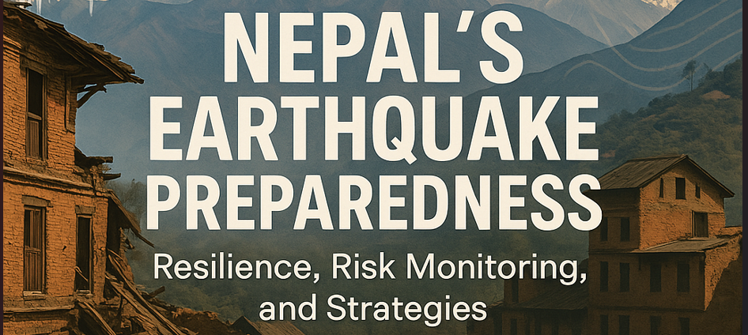

Research & Writing
Writing is part of how I think — a way to analyse, question, and communicate ideas clearly. Here you'll find articles on energy policy, buildings and climate, and technology.
64,666 reads · RIS: 88.0 · 4 Recommendations · 1 Citation

The Hydropower Illusion: Nepal's Energy Sovereignty
Nepal sits atop 83,000 MW of hydropower potential, yet the average Nepali uses less electricity than someone in sub-Saharan Africa. An investigative look at who benefits from Nepal's rivers — and what this means for energy sovereignty.
Read article
Nepal's Earthquake Preparedness: Resilience, Risk Monitoring & Comprehensive Strategies
A decade after the 2015 Gorkha earthquake, Nepal has advanced in preparedness and resilience — but challenges persist in a nation sitting atop active tectonic stress.
Read article
Impact of Climate Change on Building Design and Performance
How a changing climate is reshaping architecture — from sustainable materials and passive design to smart building systems, with a case study from Nepal's Green Village project.
Read article
From Rooftops to Streets: Passive Cooling Strategies for Urban Areas
How green roofs, reflective surfaces, and urban vegetation can counter the urban heat island effect in fast-growing cities — and why passive cooling matters especially in energy-constrained contexts.
Read article
Revolutionizing Building Energy Efficiency with CAD Technology
How CAD technology enables architects and engineers to model energy use, optimise HVAC systems, and design buildings that are more efficient from the outset — and what still holds adoption back.
Read article
AI Writing: A Blessing or a Curse?
AI writing tools can enhance productivity and creativity — but uncritical use risks eroding writing skills, authenticity, and research integrity. What does responsible use look like?
Read article